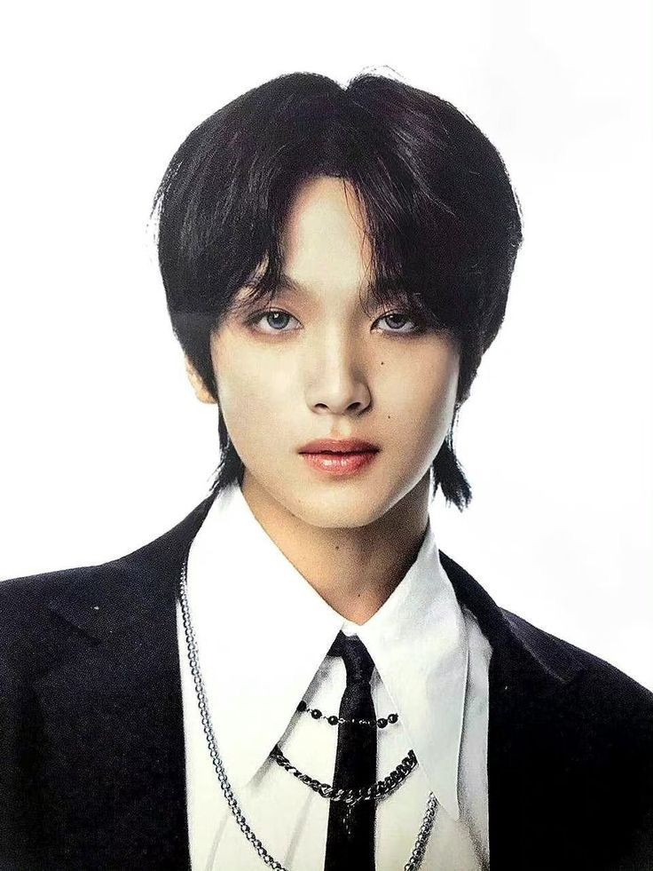

Peran Haechan di NCT

Haechan, yang bernama asli Lee Dong-hyuk, adalah anggota grup K-pop NCT di bawah naungan SM Entertainment. Ia aktif dalam beberapa sub-unit, termasuk NCT 127, NCT Dream, dan NCT U. Berikut adalah peran dan kontribusinya dalam grup:
-
Vokalis Utama
Haechan, yang bernama asli Lee Dong-hyuk, adalah anggota grup K-pop NCT di bawah naungan SM Entertainment. Ia aktif dalam beberapa sub-unit, termasuk NCT 127, NCT Dream, dan NCT U. Berikut adalah peran dan kontribusinya dalam grup. -
Penari Handal dan Performer Enerjik
Selain vokal, Haechan juga memiliki kemampuan menari yang kuat. Ia sering memukau penonton dengan gerakan tariannya yang energik dan ekspresif di atas panggung. Kombinasi vokal dan tariannya menjadikannya performer yang serba bisa. -
Mood Maker dan Energi Positif Grup
Dikenal dengan kepribadiannya yang ceria dan humoris, Haechan sering disebut sebagai "mood maker" dalam grup. Ia mampu menghidupkan suasana dan meningkatkan semangat anggota lainnya dengan lelucon dan tingkah lakunya yang lucu. Julukan "Full Sun" diberikan padanya karena kepribadiannya yang hangat dan bersinar. -
Kontribusi dalam Penulisan Lagu
Haechan juga terlibat dalam proses kreatif pembuatan lagu. Ia telah berkontribusi dalam penulisan lirik untuk beberapa lagu NCT Dream, menunjukkan bakatnya tidak hanya sebagai penyanyi dan penari, tetapi juga sebagai penulis lagu.